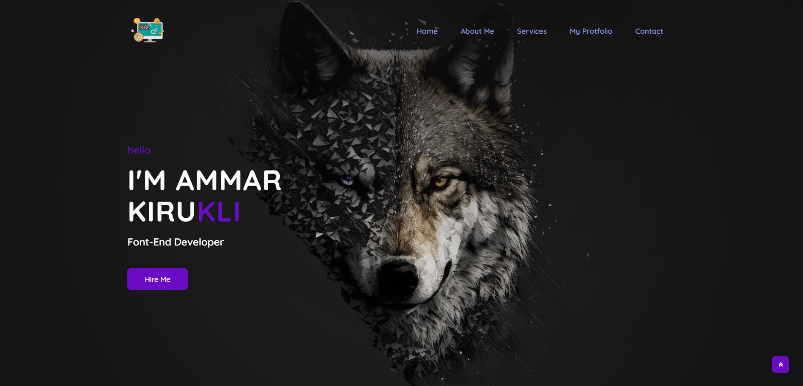
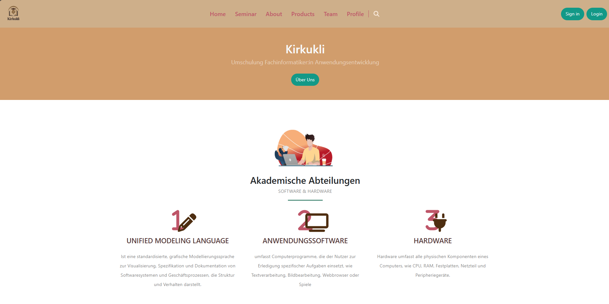
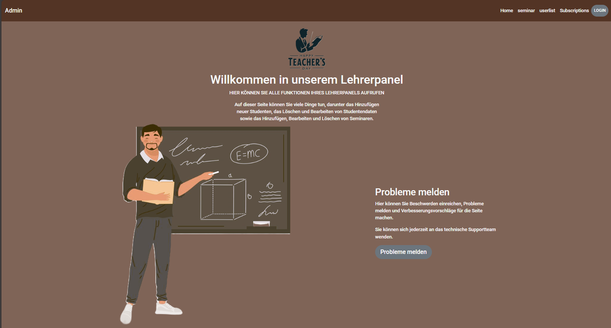
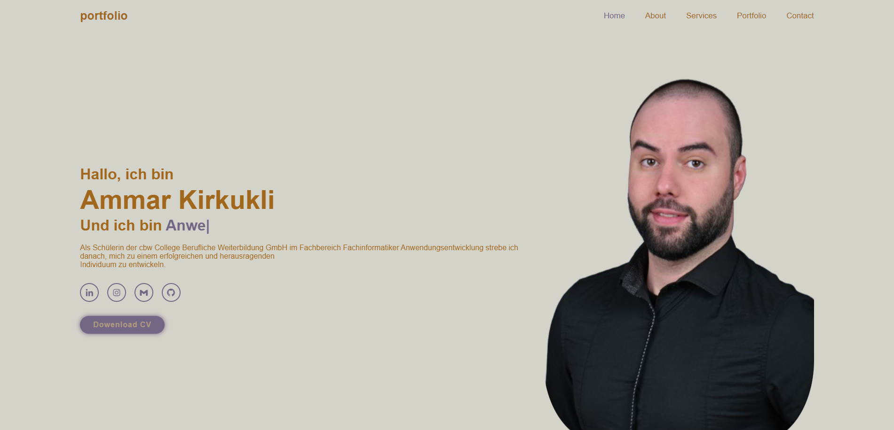

Latest Project



Umschulung-Schüler
Website für Schüler in der Umschulung mit Registrierung und Login. Nutzer können ihre Daten anzeigen und ändern, an Blogbeiträgen und Seminaren teilnehmen sowie Lernprodukte einsehen. Die Startseite zeigt alle Umschulungsinfos, ergänzt durch About-, Team-, Profil- und Logout-Bereich.


Portfolio
Meine Webseite bietet nicht nur eine einfache Anzeige, sondern ermöglicht auch Interaktion. Sie enthält meine persönlichen Daten sowie die Zertifikate und Qualifikationen, die ich erworben habe. Damit dient sie als umfassende Plattform, um mich besser kennenzulernen und mit mir in Kontakt zu treten.